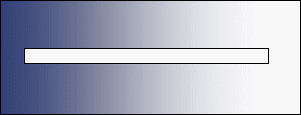

<!--
/**
 * WinEMS
 * Copyright (C) 2006, 2007, 2008, 2009 WinEMS
 * 
 * WinEMS is licensed under the GNU General Public License
 * and the Apache License, Version 2.0, as follows:
 *
 * This program is free software; you can redistribute it and/or 
 * modify it under the terms of the GNU General Public License
 * as published by the Free Software Foundation; either version 2
 * of the License, or (at your option) any later version.
 * 
 * This program is distributed WITHOUT ANY WARRANTY; without even the 
 * implied warranty of MERCHANTABILITY or FITNESS FOR A PARTICULAR PURPOSE.  
 * See the GNU General Public License for more details.
 * 
 * You should have received a copy of the GNU General Public License
 * along with this program; if not, write to the Free Software
 * Foundation, Inc., 59 Temple Place - Suite 330, Boston, MA 02111-1307, USA.
 *
 * Licensed under the Apache License, Version 2.0 (the "License");
 * you may not use this file except in compliance with the License.
 * You may obtain a copy of the License at
 * 
 * http://www.apache.org/licenses/LICENSE-2.0
 * 
 * Unless required by applicable law or agreed to in writing, software
 * distributed under the License is distributed on an "AS IS" BASIS,
 * WITHOUT WARRANTIES OR CONDITIONS OF ANY KIND, either express or implied.
 * See the License for the specific language governing permissions and
 * limitations under the License.
 */
-->
<html>
<body onload="setTimeout(showFile, 2300);" style="background-color:linen">

<script language=javascript>
function wait(msecs)
{
	var start = new Date().getTime();
	var cur = start
	while(cur - start < msecs)
	{
		cur = new Date().getTime();
	}
}
function showFile()
{
	document.all.work.style.display='none'
	document.all.filemsg.style.display=''
    //document.all.filemsg.innerHTML="<h2>Run Saved: </h2> <a href=''>View XML</a>  <a href=''>View PDF</a>"
}
</script>

<div id="work">
<center>

<div style="margin-top:-70"><h2>Generating PCR</h2></div>
</center>
</div>


<div id="filemsg" style="border:0px solid black;display:none">
<center>
<h2>PCR Generation Complete</h2>
</center>
<hr/>
The following items have been generated for this run:
<br/>
<a href=''> 1. NEMSIS XML Data File</a>
<br/>
<a href=''> 2. Completed New York State PCR Report (Version 5)</a>
<br/>

</div>

</body> 
</html>
